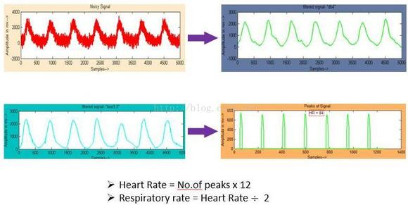
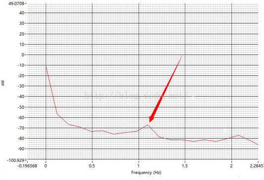

1. PPG测量心率
PPG(photoplethysmographic,光电容积脉搏波描记法) 以LED光源和探测器为基础,测量经过人体血管和组织反射、吸收后的衰减光,记录血管的搏动状态并测量脉搏波。
1.1 原理
当LED光射向皮肤，透过皮肤组织反射回的光被光敏传感器接受并转换成电信号再经过AD转换成数字信号。像肌肉、骨骼、静脉等等对光的吸收是基本不变的（前提是测量部位没有大幅度的运动），但是血液不同，由于动脉里有血液的流动，那么对光的吸收自然也有所变化。我们把光转换成电信号时，正是由于动脉对光的吸收有变化，其他组织对光的吸收基本不变，得到的信号就可以分为直流交流AC信号和DC信号。提取其中的AC信号，就能反应出血液流动的特点。
传感器选择绿光原因：
- 皮肤的黑色素会吸收大量波长较短的波
- 皮肤上的水份也会吸收大量的UV和IR部分的光
- 进入皮肤组织的绿光(500nm)– 黄光(600nm)大部分会被红细胞吸收
- 红光和接近IR的光相比其他波长的光更容易穿过皮肤组织
- 血液要比其他组织吸收更多的光
- 相比红光，绿（绿-黄）光能被氧合血红蛋白和脱氧血红蛋白吸收
1.2 对PPG信号的处理方法
-
时域分析
对原始PPG信号进行滤波处理，得到一定时间内的波峰个数，即可算出心率值。
 -
频域分析
对PPG信号进行FFT变换，下图中可以看到，0Hz的信号很强，这是骨骼、肌肉等组织的DC信号，在1Hz附近有个相对比较突出的信号就是血液流动转变的AC信号。假设得到的频率f=1.2Hz，则心率HR=f*60=72。

1.3 PyTorch 实现
已知PPG信号与采样频率（实习项目里帧率为30），bpm计算代码如下：
FFT_N=1024
LOW=42 # hr_low
HIGH=180 #hr_high
DF = 30.0/FFT_N*60.0 # 30fps
def get_bpm(x):
l,h=int(LOW/DF+0.5),int(HIGH/DF)
y = torch.abs(torch.fft.fft(x, FFT_N))
y_ = y[l:h]
bpm = (torch.argmax(y_) + l)*DF
return bpm
2. 常见信号评价指标
2.1 信噪比 SNR
2.1.1 什么是信噪比
信噪比 SNR(Signal-to-noise Ration)，指系统中信号与噪声的比值。图像信噪比是指视频信号与噪波信号大小的比值，信噪比越大，图像画面越干净；信噪比小，画面上噪声干扰大，影响图像画面质量。
2.1.2 信噪比计算
信噪比SNR常用分贝dB表示，其表达式如下：
$$ SNR=10\cdot\log\frac{P_S}{P_N} $$
其中：
-
$P_S$：信号的有效功率
-
$P_N$：噪声的有效功率
在图像中，用信号与噪声的方差之比来近似估计SNR：
$$ SNR=10\cdot\log\frac{\sum_{i}\sum_{j}{g(i,j)^2}}{\sum_{i}\sum_{j}{[g(i,j)-f(i,j)]^2}} $$
其中$g(i,j),f(i,j)$分别是原始图像和去噪后的图像在$(i,j)$处的灰度值。
2.2 峰值信噪比 PSNR
峰值信噪比经常用作图像压缩等领域中信号重建质量的测量方法，它常简单地通过均方差（MSE）进行定义，两个单色图像I和K的计算公式如下：
$$ MSE=\frac{1}{mn}\sum_{i}\sum_{j}||I(i,j)-K(i,j)||^2\ PSNR=10\cdot\log_{10}(\frac{MAX^2_I}{MSE}=20\cdot\log_{10}(\frac{MAX_I}{\sqrt{MSE}}) $$
其中，MAX_I是表示图像点颜色的最大数值，如果每个采样点用 8 位表示，那么等于255。
2.3 皮尔逊线性相关系数 PLCC
皮尔逊线性相关系数 PLCC(Pearson linear correlation coefficient) 描述了主观评分和算法评分之间的线性相关性，值越大越好，取值区间为$[-1,1]$
$$ \rho_{X,Y}=\frac{\sigma_{XY}}{\sigma_{X}\sigma_{Y}}\ \sigma_{XY}=E(XY)-E(X)E(Y) $$
通常用1-plcc或者1-abs(plcc)作为损失函数，其pytorch实现如下：
import torch.nn.functional as F
plcc = F.cosine_similarity(preds - preds.mean(dim=1, keepdim=True), labels - labels.mean(dim=1, keepdim=True))
return (1-plcc).mean()
2.4 峰度和偏度
2.4.1 峰度
峰度(peakedness; Kurtosis)又称峰态系数。表征概率密度分布曲线在平均值处峰值高低的特征数，直观上峰度反映了峰部的尖度。其计算方法为随机变量的四阶中心矩与方差平方的比值：
$$ Kurt(X)=E[(\frac{X-\mu}{\sigma})^4]=\frac{E[(X-\mu)^4]}{(E[(X-\mu)^2])^2} $$
峰度取值范围为$[1,+\infty)$，直观上峰度值越大，概率分布图越高尖，正态分布(=3) ，厚尾(>3) 和 瘦尾(<3)。
2.4.2 偏度
偏度(Skewness)用来度量随机变量概率分布的不对称性。
$$ S=E[(\frac{X-\mu}{\sigma})^3] $$
偏度取值范围为$(-\infty,+\infty)$，当偏度<0时，概率分布图左偏；=0时，概率分布图相对均匀的分布在均值两侧，但不一定对称分布；>0时，概率分布图右偏。